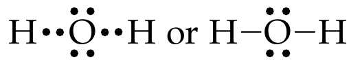
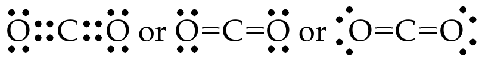
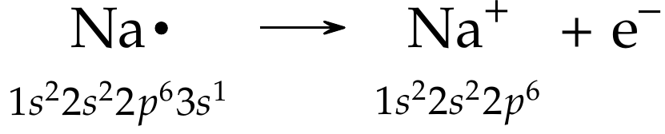
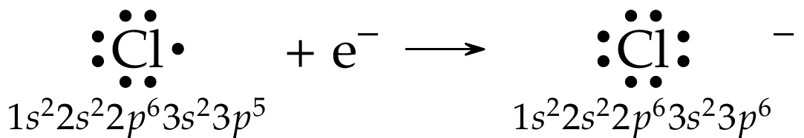
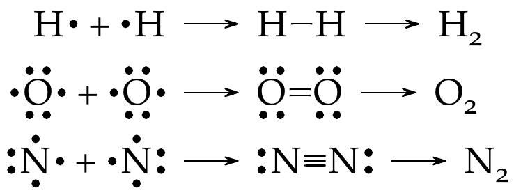

Atoms First - A short introduction
Contents
Atoms First - A short introduction#
Introduction#
From the origins of the universe to the dramatic development of the COVID-19 mRNA vaccines, chemical elements are essential to our understanding of nature. In this chapter we recap some of the elementary concepts of introductory college chemistry. All of these concepts are covered in detail during the first semester of a two-semester college chemistry sequence (e.g., CHEM 111).
Learning Goals
The main goals for this chapter are to:
define basic atomic principles,
identify different expressions of mass and concentrations, and
understand the organization and trends in the periodic table.
Atoms and Subatomic Particles#
Atoms (from the Greek word atomos, which means “uncuttable”) are extraordinarily small building blocks of matter. Specifically, an atom is the smallest quantity of matter that still retains the properties of matter. Elements are substances that cannot be broken down into simpler substances and are made up of atoms. Atoms are composed of three fundamental subatomic particles, two of which are contained in a dense nucleus. The nucleus is composed of electrically neutral neutrons and positively charged protons and is surrounded by a cloud of negatively charged electrons. The important properties of these subatomic particles are shown in Table 1.
Mass of individual atoms are very low and are expressed in atomic mass units or \(\pu{amu}\). The \(\pu{amu}\) is equal to one-twelfth the mass of a carbon-12 atom.
Particle |
Mass |
Mass |
Charge |
Charge |
|---|---|---|---|---|
\(\pu{g}\) |
\(\pu{amu}\) |
Absolute, \(\pu{C}\) |
Relative |
|
Electron |
\(\pu{9.109e-28}\) |
\(\pu{5.486e-4}\) |
\(\pu{-1.6022e-19}\) |
\(-1\) |
Proton |
\(\pu{1.673e-24}\) |
\(1.007\) |
\(\pu{1.6022e-19}\) |
\(+1\) |
Neutron |
\(\pu{1.675e-24}\) |
\(1.009\) |
\(0\) |
\(0\) |
Atoms are identified by the number of protons and neutrons they contain. The atomic number (\(Z\)) is the number of protons in the nucleus of each atom of an element. It also indicates the number of electrons in the atom - because for an atom to be neutral, it must contain the same number of protons and electrons. \(Z\), \(A\), and number of neutrons are all positive integers (whole numbers).
The mass number (\(A\)) is the total number of neutrons and protons in an atom and is estimated as follows:
The accepted way to express this information in geochemical settings is as follows for a hypothetical element, \(X\) is \(^A_Z X\).
Example: Estimating subatomic particles
For the elemen fluorine (\(\ce{F}\)), \(A=19\) and \(Z=9\). Therefore using Eq. (1), we can determine that the number of neutrons in an atom of \(\ce{F}\) is \(19-9 = 10\). This information can be shown as \(\ce{^19_9{F}}\).
Atoms of any given element are not all identical. Instead, most elements have two or more isotopes That is, these elements have same \(Z\), but different \(A\). Because \(Z\) does not change for isotopes of any element (if \(Z\) changed, it would be a different element!), \(Z\) can be dropped and only \(A\)} is often shown.
A small set of naturally occurring elements in the periodic table have only one stable isotope.
Example: Isotope notation
For example, \(\ce{H}\) has three isotopes: \(\ce{^1_1H}\) (protium), \(\ce{^2_1H}\) (deuterium), and \(\ce{^3_1H}\) (tritium) and can be shown as \(\ce{^1H}\), \(\ce{^2H}\), and \(\ce{^3H}\). Only \(\ce{H}\) isotopes have specific names, isotopes of all other elements are denoted by their mass numbers or names as shown in the examples below:
Carbon-14 or \(\ce{C-14}\) or \(\ce{^{14}C}\)
Oxygen-18 or \(\ce{O-18}\) or \(\ce{^{18}O}\)
Uranium-238 or \(\ce{U-238}\) or \(\ce{^{238}U}\)
Mass and Concentrations#
Atomic Mass#
Atomic mass is the mass of an atom in amu. When you look up the atomic mass of most elements in a periodic table, those values are usually not whole numbers. The difference arises because most naturally occurring elements have more than one isotope. This means that generally, when we determine the atomic mass of an element, what we are actually measuring is the average atomic mass of the naturally occurring mixture of isotopes. The average atomic mass of an element is a weighted, average mass of all the isotopes present in a naturally occurring sample of that element. This is equal to the sum of each individual isotope’s mass multiplied by its fractional abundance.
Example: Calculating average atomic masses
Naturally occurring \(\ce{C}\) has two major stable isotopes - \(\ce{^{12} C}\) (\(99\%\) of all stable \(\ce{C}\)) and \(\ce{^{13} C}\) (\(1\%\) of all stable \(\ce{C}\)).
The atomic mass of \(\ce{^{12} C}\) and \(\ce{^{13} C}\) is \(\pu{12 amu}\) and \(\pu{13 amu}\), respectively. Using Eq. (2) we can calculate the overall atomic mass of naturally occurring \(\ce{C}\):
\[ = \frac{99}{100} \times \pu{12 amu} + \frac{1}{100}\times \pu{13 amu} = \pu{12.01 amu} \]
Mole#
Atoms are so tiny that even the smallest quantity of matter contains an enormous number of atoms. It is very useful to know exact number of atoms involved in a chemical reaction. For convenience, chemists use a unit of measurement called the mole to denote these large number of atoms. A mole which is defined as the amount of a substance that contains as many elementary entities (e.g., atoms, ions, etc.) as there are atoms in exactly \(\pu{0.012 kg}\) (\(\pu{12 g}\)) of carbon-12. The number of (experimentally determined) atoms in exactly \(\pu{12 g}\) of carbon-12 is known as Avogadro’s Number (\(N_A\)).
The currently accepted value of Avogadro’s number is \(\pu{6.0221418e23}\), although we usually round this number to \(\pu{6.022e23}\).
How big is a mole? (Not the animal, the other one.) - TED-Ed.
Molar Mass#
We know the number of atoms present in a mole of any substance, but how much does this mole weigh? Literally, we need to know the weight of each atom of that substance and add all these masses. An easier way to deal with this is the molar mass concept.
The molar mass of a substance is the mass in grams of one mole of a substance. Atomic mass has the units of atomic mass units or amu.
Example: Calculating molar masses:
Carbon-12 or \(\ce{^{12} C}\) (most abundant stable isotope of \(\ce{C}\)) is used the standard example – mass of one mole of \(\ce{^{12} C}\) is exactly \(\pu{12 g}\), i.e., molar mass of \(\ce{^{12} C}\) is equal to its atomic mass in grams. The overall molar mass of naturally occurring \(\ce{C}\)
\[ = \frac{99}{100} \times \pu{12 g} + \frac{1}{100}\times \pu{13 g} = \pu{12.01 g} \]
So how do we convert from moles to molar masses to number of atoms? Set up conversion factors such that units are explicitly shown and are consistent.
Example: Conversion of moles to grams
Ca is the most abundant metal in the human body. A typical human body contains roughly \(\pu{30 moles}\) of \(\ce{Ca}\).
and
Therefore, there are \(\pu{1202.3 g Ca}\) in an average human body.
Example: Conversion of grams to atoms
Copper is commonly used to fabricate electrical wire. How many copper atoms are in \(\pu{5.00 g}\) of copper wire?
Answer:
The number of \(\ce{Cu}\) atoms in the wire may be conveniently derived from its mass by a two-step computation: first calculating the molar amount of \(\ce{Cu}\), and then using Avogadro’s number (\(N_A\)) to convert this molar amount to number of \(\ce{Cu}\) atoms:
Chemical Formulas#
A chemical formula denotes composition of any chemical substance. In a molecular formula, exact number of atoms of each element in a molecule are shown.
Molecular formulas
\(\ce{H2}\) is the molecular formula for hydrogen, \(\ce{O2}\) is that for oxygen, \(\ce{CO2}\) is that for carbon dioxide, and \(\ce{H2O}\) is that of water. The subscript number indicates the number of atoms of an element present in the molecule. There is no subscript for \(\ce{O}\) in \(\ce{H2O}\) because there is only one oxygen atom in a molecule of water and \(1\) is never used as a subscript in a chemical formula.
Structural formulas not only show the elemental composition, they also show the general arrangement of the atoms within the molecule. See different representations in Fig. 1 and Fig. 2.
Fig. 1 A methane molecule can be represented as (a) a molecular formula, (b) a structural formula, (c) a ball-and-stick model, and (d) a space-filling model. Carbon and hydrogen atoms are represented by black and white spheres, respectively. Image source: 2.4 Chemical Formulas - Chemistry: Atoms First | OpenStax#

Fig. 2 Molecular structure of caffeine molecule. The structure is shown as a ball-and-stick model with color of each ball represents an atom of a specific element. Typically black ball are \(\ce{C}\), blue balls are \(\ce{N}\), white balls are \(\ce{H}\), and the red balls are \(\ce{O}\). Source: Caffeine - Wikipedia#
Empirical (“from experience” or “experimentally”) formulas tell which elements are present in a molecule and in what whole-number ratio relative to each other. This is usually determined experimentally. It is the simplest chemical formula possible for any molecule. Usually, it is written by reducing the subscripts of molecular formulas to the smallest possible whole number. But, molecular formulas are true formulas of molecules.
Example of empirical formulas
Below are some examples of molecular and empirical formulas.
Compound |
Molecular Formula |
Empirical formula |
|---|---|---|
Water |
\(\ce{H2O}\) |
\(\ce{H2O}\) |
Hydrogen Peroxide |
\(\ce{H2O2}\) |
\(\ce{HO}\) |
Propane |
\(\ce{C3H8}\) |
\(\ce{C3H8}\) |
Benzene |
\(\ce{C6H6}\) |
\(\ce{CH}\) |
In above example, water and propane already have the simplest formula possible with whole number subscripts. Therefore, both molecular and empirical formulas are same.
Molecular and Formula Masses#
Molecular mass is the sum of the atomic masses (in amu) of the atoms that make up the molecule. Often, molecular mass is referred to as molecular weight.
Example: Molecular mass
Molecular mass of \(\ce{H2O = 2(atomic mass of H) + atomic mass of O}\) = \(2(\pu{1.008 amu}) + \pu{16.00 amu} = \pu{18.02 amu}\)
Since ionic compounds are not whole molecules, their masses are based on their empirical formulas and are called formula mass or formula weight.
Examples of molecular and formula masses
Compound |
Chemical Formula |
Molecular Mass, \(\pu{amu}\) |
Empirical Mass, \(\pu{amu}\) |
|---|---|---|---|
Water |
\(\ce{H2O}\) |
\(18.02\) |
\(18.02\) |
Hydrogen Peroxide |
\(\ce{H2O2}\) |
\(34.01\) |
\(17.01\) |
Propane |
\(\ce{C3H8}\) |
\(44.10\) |
\(44.10\) |
Benzene |
\(\ce{C6H6}\) |
\(78.11\) |
\(13.02\) |
Percent Composition#
If we know the molecular or empirical formula of a compound, we can easily estimate the percent composition by mass of each element in that compound. Percent composition of each element is calculated as:
where \(n\) is number of atoms of the element in the compound. A list or table of the percent by mass of each element in a compound is known as the compound’s percent composition by mass.
Example: Calculating percent composition of \(\ce{H2O}\)
Atomic masses of \(\ce{H}\) and \(\ce{O}\) are \(\pu{1.008 amu}\) and \(\pu{16.00 amu}\) respectively, the molecular mass of \(\ce{H2O}\) is \(\pu{18.02 amu}\). Percent composition is as follows:
The sum of the percentages add up to \(\pu{100 \%}\).
Determining Chemical Formulas#
Percent composition is often determined experimentally and precisely using very sensitive analytical instrumentation. This information can be used to determine the empirical formula of a substance of interest.
Rules for determining empirical formulas
Determine weight percent of each element in the compound
Determine weight in grams of each element per 100 g of compound
Divide weight of each element in grams by atomic weight to determine the number of moles
Using the element with the least number of moles, determine the relative number of moles of all other elements – these integers represent the formula for the compound
It is best to set this up as a table. See example below.
Example: Determining chemical formulas
During a chemical reaction a precipitate forms. The percent mass was determined experimentally as follows: \(\ce{Ca} = \pu{39.74 \%}\), \(\ce{P} = \pu{18.42 \%}\), \(\ce{O} = \pu{38.07 \%}\), and \(\ce{F} = \pu{3.77 \%}\). Determine the chemical formula for this compound.
Answer:
First, let’s set this information up as a table and calculate the moles of each element.
Element |
Wt., % |
Wt./100 g |
At. Wt. |
Moles |
Rel. Moles |
|---|---|---|---|---|---|
\(\ce{Ca}\) |
\(39.74\) |
\(39.74\) |
\(40.08\) |
\(0.992\) |
\(5\) |
\(\ce{P}\) |
\(18.42\) |
\(18.42\) |
\(30.97\) |
\(0.595\) |
\(3\) |
\(\ce{O}\) |
\(38.07\) |
\(38.07\) |
\(16.00\) |
\(2.379\) |
\(12\) |
\(\ce{F}\) |
\(3.77\) |
\(3.77\) |
\(19.00\) |
\(0.198\) |
\(1\) |
Based on this information, the formula of the compound is \(\ce{Ca5P3O12F}\). If we re-arranged this formula, we get \(\ce{Ca5(PO4)3F}\) (fluorapatite).
In the above example, since the percent mass was determined experimentally, the resulting formula is considered to be an empirical formula, or the simplest whole-number ratio of atoms that make up a compound. If we know or determined the molecular weight of this compound by other means, we could compare the formula and molecular weights and then determine exact molecular formula.
Example: Determining molecular formula
If the empirical formula of a compound is \(\ce{CH3}\) and its molecular weight is \(\pu{30 g}\), the molecular formula can be determined as follows.
Answer:
First, calculate the formula weight of
Since the molecular weight is twice the formula weight, the molecular formula is \(\ce{C2H6}\).
Solutions and Concentrations#
Concentration is a major factor that can influence reactions in aqueous solutions. It is defined as the amount of solute dissolved in a given quantity of solvent or solution.
Molarity, or molar concentration, \(\pu{M}\), is defined as the number of moles of solute per liter of solution and can also be written as \(\pu{mol L-1}\).
The Periodic Table#
The periodic table offers a lot of information that is used by geologists as well! Understanding why elements in the periodic table are arranged in the particular way helps us understand major geological concepts better.
Arrangement of elements in the periodic table based on their physical and chemical properties is arguably one of the greatest achievements in all of science. Many scientists over many hundreds of years studied elemental properties and a way to organize them. It culminated in the work of Dmitri Mendeleev (Dmitri Mendeleev - Wikipedia) - who finally created a version of the periodic table organized by atomic numbers of elements and arranged in groups and periods. This modern periodic table is arguably one of the greatest achievements in modern science.
Solving the puzzle of the periodic table - Eric Rosado | TED-Ed
The genius of Mendeleev’s periodic table | TED-Ed
Below is the latest version of IUPAC periodic table. The International Union of Pure and Applied Chemistry (iupac.org) is an nonpolitical and international authority on chemical nomenclature and terminology, including the naming of new elements in the periodic table and all elemental data. This version supersedes all other versions of periodic tables in all your textbooks. The periodic table is updated when new elements are created or new or updated data is available. Another good source of elemental information is Periodic Table - Ptable.

Fig. 3 The official IUPAC periodic table of elements. Image source: Periodic Table of Elements - IUPAC | International Union of Pure and Applied Chemistry#
The periodic table contains 118 elements and are arranged according to the \(Z\) shown above each element. With the exception of \(\ce{H}\), nonmetals appear at the far right of the table. The two rows of metals below the main table are separated to keep the table from being too wide. The 1-18 group designation is an IUPAC-recommendation.
The elements are arranged in periods, horizontal rows, in order of increasing \(Z\). The first period contains just two elements, \(\ce{H}\) and \(\ce{He}\). The second and third periods each contain eight elements: \(\ce{Li-Ne}\), and \(\ce{Na-Ar}\), respectively. The fourth and fifth periods each contain 18 elements: \(\ce{K-Kr}\), and \(\ce{Rb-Xe}\), respectively.
Most elements can be categorized as metals or nonmetals. One of the properties used to distinguish metals from nonmetals is metals’ ability to conduct heat and/or electricity. Metalloids are elements with properties that are intermediate between those of metals and nonmetals. These include \(\ce{B, Si, Ge, As, Sb, Te, Po, and At}\). The below shows main classes of elements in the periodic table.
Fig. 4 The periodic table organizes elements with similar properties into groups and periods. Image source: 3.6 The Periodic Table - Chemistry: Atoms First | OpenStax#
Vertical columns in the periodic table are groups, referred to collectively by their group number (Group 1, Group 2, and so on). For convenience, some groups have special names: e.g., Group 1 are alkali metals, Group 2 are alkaline earth metals, Group 16 are chalcogens, Group 17 are halogens, and Group 18 are the noble gases. Elements in Group 3-12 collectively are called the transition elements or the transition metals.
For more information, see 3.6 The Periodic Table - Chemistry: Atoms First | OpenStax.
Electron Configurations#
Hydrogen’s atomic structure is the simplest of all elements due to the presence of just one electron in its atomic structure. For all other elements, quantum theory has to be applied to predict and describe the configuration of electrons in an atom. Subatomic particles are not governed by the same physical laws as all other substances on Earth, obviously due to their size and mass.
Understanding electronic structure of elements if fundamental to understanding how different minerals and rocks form. Further, knowledge of electron configurations helps us understand and predict the properties of the elements. It also explains why the elements fit into the periodic table the way they do.
Quantum Mechanics#
Pioneering work in quantum theory (quantum, or the smallest quantity of energy emitted or absorbed, was proposed by German physicist, Max Planck and later advanced by Einstein and others) revolutionized the whole field of physics and chemistry. Other ideas in quantum mechanics (e.g., Heisenberg uncertainty principle, Schrödinger’s equation) greatly helped us understand complex particle- and wave-like behavior of electrons around the nucleus.
Quantum mechanics does not allow us to specify the exact location of an electron in an atom, it does define the region where the electron is most likely to be at a given time. Electron density gives probability that an electron will be found in a particular region of an atom. In this description of an atom, we use atomic orbitals to refer to wave function of an electron in an atom.
Quantum numbers are required to describe the distribution of electron density in an atom. Each atomic orbital in an atom is characterized by a unique set of three quantum numbers: the principal quantum number (\(n\)), the angular momentum quantum number (\(l\)), and the magnetic quantum number (\(m_l\)).
The principal quantum number (\(n\)) designates the size of the orbital. Values of \(n\) are \(1,\ 2,\ 3,\ \ldots, \) etc. Larger the \(n\), greater the distance of an electron in that orbital from the nucleus. Collection of orbitals with same \(n\) value is called a shell.
The angular momentum quantum number (\(l\)) describes the shape of the orbital and depends on the value of \(n\) (range from 0 to \(n-1\)). One or more orbitals with same \(n\) and \(l\) values are called subshells. E.g., \(2s\) and \(2p\). See Table 2 for orbital designations.
\(l\) |
\(0\) |
\(1\) |
\(2\) |
\(3\) |
|---|---|---|---|---|
Orbital designation |
\(s\) |
\(p\) |
\(d\) |
\(f\) |
The magnetic quantum number (\(m_l\)) describes the orientation of the orbital in space. Within a subshell, \(m_l\) depend on the value of \(l\) and there are (\(2l+1\)) values of \(m_l\) from \(-l,\ldots, 0, \ldots, +l\).
Though three quantum numbers are sufficient to describe an atomic orbital, electron spin quantum number (\(m_s\)) is necessary to describe an electron that occupies the orbital. Physicists determined that electrons have magnetic properties due to spinning of electrons on their own axes. The \(m_s\) value specifies two possible and opposite directions of spin as: \(+\frac{1}{2}\) and \(-\frac{1}{2}\). Quantum numbers are summarized in Table 3.
Quantum number |
Symbol |
Values |
|---|---|---|
Principal |
\(n\) |
\(1, 2, 3, \ldots, \infty\) |
Angular Momentum |
\(l\) |
\(n-1, n-2, n-3, \ldots, 0\) |
Magnetic |
\(m_l\) |
\(0, \pm1, \pm2, \ldots, \pm l\) |
Electronic Spin |
\(m_s\) |
\(\pm\frac{1}{2}\) |
Atomic Orbitals#
Even though it is hard to describe what atomic orbitals look like, they are assigned specific shapes to help understand formation of chemical bonds and molecular geometry in Earth materials. These shapes represent probability distributions for the location of the electron. The Heisenberg uncertainty principle tells us that it is impossible to simultaneously measure the position and momentum of a particle. In this case, the position of an electron is only approximately known. Fig. 5 shows these approximate locations at any time.
Fig. 5 Balloon diagrams showing where electron densities are concentrated in \(s\), \(p\), and \(d\) orbitals. Source: 3.5 Periodic Variations in Element Properties - Chemistry: Atoms First | OpenStax#
Electron Configurations#
The \(\ce{H}\) atom is a particularly simple system because it contains only one electron, which may reside in the \(1s\) orbital (the ground state), or in some higher-energy orbital (an excited state). With many-electron systems, we need to know the ground-state electron configuration – i.e., how the electrons are distributed in the various atomic orbitals. To do this, we need to know the relative energies of atomic orbitals in a many-electron system, which differ from those in a one-electron system such as \(\ce{H}\).
Note
The ground state for a many-electron atom is the one in which all the electrons occupy orbitals of the lowest possible energy.
Fig. 6 shows the general order or orbital energies in a many-electron atom. In contrast to the \(\ce{H}\) atom, many-electron systems depend on values of both \(n\) and \(l\). The general order in which electrons fill can be summarized in Fig. 7.
Using Pauli exclusion principle, no two electrons in an atom can have the same four quantum numbers. Because each orbital corresponds to a unique set of the first three quantum numbers and the spin quantum number has only two possible values, two electrons with opposite spins may occupy a given orbital.
Fig. 6 Orbital energy levels in many-electron atoms. For a given value of \(n\), orbital energy increases with the value of \(l\). \(s\), \(p\), \(d\), and \(f\) levels can hold 2, 6, 10, and 14 electrons, respectively. Source: 3.5 Periodic Variations in Element Properties - Chemistry: Atoms First | OpenStax#
We can write electron configurations for elements based on the order of orbital energies and the Pauli exclusion principle. The Aufbau principle makes it possible to “build” the periodic table of the elements and determine their electron configurations by steps. Each step involves adding one proton to the nucleus and one electron to the appropriate atomic orbital. Through this process we gain a detailed knowledge of the electron configurations of the elements. The Hund’s rule, which states that the most stable arrangement of electrons in orbitals of equal energy is the one in which the number of electrons with the same spin is maximized, is finally used to round up all the rules for writing the electron configurations.
Fig. 7 A simple way to remember the order in which orbitals fill with electrons. The arrow leads through each subshell in the appropriate filling order for electron configurations. This chart is straightforward to construct. Simply make a column for all the \(s\) orbitals with each \(n\) shell on a separate row. Repeat for \(p\), \(d\), and \(f\). Be sure to only include orbitals allowed by the quantum numbers (no \(1p\) or \(2d\), and so forth). Finally, draw diagonal lines from top to bottom as shown. Source: 3.5 Periodic Variations in Element Properties - Chemistry: Atoms First | OpenStax#
General rules for writing electron configurations
The following general rules for determining the electron configuration of an element in the ground state:
Electrons will reside in the available orbitals of the lowest possible energy. The overall energy of the atom is minimized.
Each orbital can accommodate a maximum of two electrons.
Electrons will not pair in degenerate (equal energy) orbitals if an empty orbital is available.
For each set of orbitals (\(s\), \(p\), \(d\), \(f\)) the electrons will first be added singly to each available orbital. After all the orbitals in a set have a single set have a single electron, subsequent electrons can enter these orbitals if they have the opposite spin.
Atoms attain their maximum stability when the available orbitals are either completely-filled, half-filled, or empty.
Orbitals will fill in the order indicated shown in the above, which provides a simple way for you to remember the proper order.
Example: Writing electron configuration
Let’s write the electron configuration of a calcium (\(\ce{Ca}\)) atom (\(Z = 20\)) using the general rules given above.
Because \(Z = 20\), we know that a \(\ce{Ca}\) atom has 20 electrons. They will fill orbitals in the order designated in the above. Remember, each \(s\), \(p\), \(d\), and \(f\) levels can hold 2, 6, 10, and 14 electrons, respectively. Follow that order and start assigning electrons to each orbital until you account for 20 electrons.
Orbitals will fill in the following order: \(1s^2 2s^2 2p^6 3s^2 3p^6 4s^2\).
Electron Configuration and the Periodic Table#
Noble gases (\(\ce{He}\)-\(\ce{Rn}\), group 18 in the periodic table) have all their orbitals completely filled. Electron configurations of all other elements (except \(\ce{H}\)) can be represented using the noble gas core, i.e., the noble gas that precedes each element is shown in brackets followed by the electron configuration in the outermost occupied subshells.
Example: Compressed electron configuration
Let’s write the electron configuration of a calcium (\(\ce{Ca}\)) atom (\(Z = 20\)) using the abbreviated form. \(\ce{Ne}\) is the closest preceding element with the electron configuration: \(1s^2 2s^2 2p^6 3s^2 3p^6\).
\(\therefore \ce{Ca}\) would be \(\ce{Ne}\)[\(4s^2\)].
Fig. 8 shows electron configuration of all the elements in the periodic table in terms of the noble gas core. As seen in this , the electron configuration in each group has the outermost electrons in common. These outermost electrons are called valence electrons. These valence electrons determine how atoms interact with one another. Having the same valence-electron configuration is what causes the elements in the same group to exhibit similar chemical properties. In the next section we explore these trends in the periodic table.
Fig. 8 Electron configuration of elements in the periodic table using the noble gas core.. Image Source: 3.4 Electronic Structure of Atoms (Electron Configurations) - Chemistry: Atoms First | OpenStax#
Trends in the Periodic Table#
Effective nuclear charge#
Nuclear charge (\(Z\)) is the number of protons in the nucleus of an atom and influence how much of this positive charge electrons experience and is expressed as effective nuclear charge (\(Z_\textrm{eff}\)). Since H has only one electron, \(Z=Z_\textrm{eff}\), but this is not the case for rest of the elements. In all other atoms, the electrons are simultaneously attracted to the nucleus and repelled by one another. An electron in a many-electron atom is partially shielded from the positive charge of the nucleus by the other electrons in the atom. If an electron is removed from an atom, the effective nuclear charge increases and more energy is required to remove any subsequent electrons, therefore, \(Z_\textrm{eff}\) increases from left to right in each period of the periodic table. Similarly, \(Z_\textrm{eff}\) increases from top to bottom in each group as each step down a group represents a large increase in \(Z\) and an additional shell of core electrons to shield the valence electrons from the nucleus. Several of the physical and chemical properties are dependent on \(Z_\textrm{eff}\).
Atomic Radius#
We envision that atoms are spherical and intuit that the atomic radius of an atom is the distance between the nucleus and the valence shell. But, according to quantum mechanics, there is no specific distance an electron can be found beyond the nucleus. So we operationally define the atomic radius in two ways: (i) the metallic radius – half the distance between the nuclei of two adjacent, identical metal atoms and (ii) the covalent radius – half the distance between adjacent, identical nuclei that are connected by a chemical bond.
Fig. 9 Atomic radii trends in the periodic table. The units are in picometers (\(\pu{e-12 m}\). Image source: 3.5 Periodic Variations in Element Properties - Chemistry: Atoms First | OpenStax#
As seen in the below, the atomic radius decreases as we move from left to right across a period and increases from top to bottom as we move down within a group. This trend may be counter-intuitive. Isn’t the atomic radius supposed to increase as we go from left to right in each period? In the previous section, we found that \(Z_{eff}\) increases from left to right in each period, i.e., there is powerful attraction between the nucleus and the valence shell when the magnitudes of both charges increase. Therefore, as we move from left to right in each period, the valence shell is drawn closer to the nucleus making the atomic radius smaller. Within each period, the trend in atomic radius decreases as \(Z\) increases; for example, from \(\ce{K}\) to \(\ce{Kr}\). Within each group (e.g., the alkali metals shown in purple), the trend is that atomic radius increases as \(Z\) increases.
Fig. 10 Within each period, the atomic radius decreases as \(Z\) increases; for example, from \(\ce{K}\) to \(\ce{Kr}\). Within each group (e.g., the alkali metals shown in purple), the atomic radius increases as \(Z\) increases. Image source: 3.5 Periodic Variations in Element Properties - Chemistry: Atoms First | OpenStax#
Ionic radius is related to atomic radius, but is deduced from bond length when the atom is bonded to one or more other atoms. As seen in Fig. 11, cations have smaller ionic radii than do anions. Also, ionic radius decreases as charge increases. This decrease is due both to loss of outer electrons and to shrinking of the orbits of the remaining electrons. The latter occurs because the charge of the nucleus is shared by fewer electrons and hence has a greater attractive force on each. In addition, ionic radius increases downward in each group in the periodic table, both because of addition of electrons to outer shells and because these outer electrons are increasingly shielded from the nuclear charge by the inner ones. Ionic radius is important in determining geochemical properties such as substitution in solids, solubility, and diffusion rates. Large ions need to be surrounded, or coordinated, by a greater number of oppositely charged ions than do smaller ones.
Fig. 11 The radius for a cation is smaller than the parent atom (\(\ce{Al}\)), due to the lost electrons; the radius for an anion is larger than the parent (\(\ce{S}\)), due to the gained electrons. The values are in \(\pu{pm}\) (= \(\pu{e-12 m}\)). Image source: 3.5 Periodic Variations in Element Properties - Chemistry: Atoms First | OpenStax#
Ionization Energy#
Ionization energy (IE) is the minimum energy required to remove an electron from an atom in the gas phase resulting in formation of a cation (ion with a positive charge).
The above reaction shows the ionization of \(\ce{Na}\) to , both in gas phases and the release of an electron (denoted as ). The ionization energy is expressed in kJ/mol or the number of kilojoules required to remove a mole of electrons from a mole of gaseous atoms. In the above \(\ce{Na}\) ionization reaction, IE \(= \pu{495.8 kJ mol-1}\). Specifically, this is the first ionization energy of sodium, IE\(_1\) (Na), which corresponds to the removal of the most loosely held electron from each \(\ce{Na}\) atom. The below shows IE\(_1\) of elements in the periodic table. In general, as the nuclear charge (\(Z_{eff}\)) increases, IE also increases.
Fig. 12 First ionization energy of elements. Image source: 3.5 Periodic Variations in Element Properties - Chemistry: Atoms First | OpenStax#
It is possible to remove additional electrons from the atoms, however, the removal of each successive electron requires expending enormous amounts of energy. It is harder to remove an electron from a cation than from an atom (and it gets even harder as the charge on the cation increases). Since core electrons are closer to the nucleus, they experience strong \(Z_{eff}\). Additionally, there are fewer filled shells shielding them from the nucleus.
Electron Affinity#
Electron affinity (EA) is the energy released when an atom in the gas phase accepts an electron resulting in formation of an anion (ion with a negative charge).
In the above reaction, one mole of gaseous Cl accepts a mole of electrons resulting in release of \(\pu{349.0 kJ mol-1}\) of energy.
See the below for EA trends in the main group elements in the periodic table. Like IE, EA increases from left to right across a period due to an increase in \(Z_{eff}\) from left to right. It becomes easier to add negatively-charged electrons to atoms as the number of positively-charged protons increase in the nucleus.
Fig. 13 Electron affinities of main group elements in the periodic table. Image source: 3.5 Periodic Variations in Element Properties - Chemistry: Atoms First | OpenStax#
Electronegativity#
Electronegativity quantifies the tendency of an element to attract shared electrons (in a covalent bonds) to itself. It is a parameter that used to characterize behavior of the elements and is inversely correlated with atomic radii within each group of the periodic table. It determines how the electron density in a molecule or a poly-atomic ion is distributed. An element with a high electronegativity has a greater tendency to attract electron density than does an element with low electronegativity. Electronegativity is a relative concept and can be measured only in relation to the electronegativity of other elements. Fig. 14 shows trends in periodic table. We can make a qualitative prediction of an atom’s electronegativity based on its EA and its IE\(_1\). In general, electronegativity increases from left to right in the periodic table. Electronegativity values range between \(0.7-4.0\) and elements with higher numbers indicate stronger ability to attract electrons (Fig. 14).
Fig. 14 Electronegativities of common elements. Image source: 4.2 Covalent Bonding - Chemistry: Atoms First | OpenStax#
Chemical Bonding#
In nature, atoms of most elements (except noble gases) do not exist independently. They are bound to other atoms in molecules, crystals, or ions. At center of this binding is the transfer or sharing of electrons, or through electrostatic forces arising from uneven distribution of charge in atoms and molecules. The most important understanding we gain from understanding the periodic table is why some elements combine in specific way to form compounds. Chemical bonds refer to attraction between atoms of specific elements allowing the formation of chemical compounds.
There are different types of chemical bonds and the specific type depends on where these elements come from in the periodic table. In this section, we explore different ways atoms bond.
Lewis Dot Symbols and Octet Rule#
It is the valence electrons that interact when atoms form compounds. Lewis dot symbols are helpful for depicting the valence electrons of the atoms involved. Each dot surrounding the symbol of an element represents a a valence electron. Note that this representation is only used for main group elements (Groups 1, 2, and 13-18) as the transition elements have incomplete inner shells.
Fig. 15 Lewis dot symbols illustrating the number of valence electrons for each element in the third period of the periodic table. Image source: 4.4 Lewis Symbols and Structures - Chemistry: Atoms First | OpenStax#
Rules for Lewis dot symbols
A maximum of 8 dots can be placed around an element’s symbol, representing maximum of 8 electrons in the valence shells (main group elements).
All noble gases have 8 dots each, except for \(\ce{He}\), which has 2 dots.
Dots can be placed above, below, left, and right of element symbol. A maximum of two dots are placed on each side of the symbol.
Exact order in which dots are placed are not important.
Each side can have a maximum of two dots, they are not paired until all sides have one dot each.
In addition to atoms, ions can also be represented using Lewis dot symbols - just add or remove appropriate number of dots from the Lewis dot symbol of the atom and include the ion’s charge.
Example: Lewis dot symbols
Let’s write Lewis dot symbols of some common elements involved in covalent bonding – \(\ce{H}\), \(\ce{C}\), \(\ce{N}\), \(\ce{O}\), and \(\ce{Si}\). First, start by writing out the electron configuration of the element. Then, identify the valence shells in the table. Then proceed to applying Lewis dot symbol rules outlined above.

Fig. 16 shows Lewis dot symbols for the main group elements shows Lewis dot symbols for the main group elements in the periodic table. We can glean from this if the main group elements are likely to lose electrons (groups 1, 2, 13, and 14) and share or gain electrons (groups 14-17).
Fig. 16 Cations are formed when atoms lose electrons, represented by fewer Lewis dots, whereas anions are formed by atoms gaining electrons. The total number of electrons does not change. Image source: 4.4 Lewis Symbols and Structures - Chemistry: Atoms First | OpenStax#
The octet rule is used as the basis for determining how atoms bond. This rule is derived from Lewis’ theory of chemical bonding. This rule states that atoms will lose, gain, or share electrons to achieve a noble gas electron configuration – for nearly all elements this would result in eight (and hence the name octet rule) valence electrons around each atom. We can predict many of the formulas for compounds that are made of specific elements. An atom achieves an octet by losing, gaining, or sharing electrons depending on the number of subatomic particles within the atom.
In chemical bonding only the valence electrons are involved in bonding. Consider the \(\ce{Cl2}\) molecule. The electron configuration of \(\ce{Cl}\) is \([\ce{Ne}]3s^2 3p^5\). The electrons in \(1s,\ 2s,\ \&\ 2p\) subshells are close to the nucleus and, hence, do not participate in bond formation. However, the 7 valence electrons in \(3s\ \&\ 3p\) subshells are valence electrons and hence, participate in chemical bonding.) When there are 8 dots present around an atom, it is said to have achieved the octet or is isoelectronic with the noble gases.
{kind=link}
Fig. 17 The chlorine atom shows 7 valence electrons and upon accepting an additional electron to achieve the octet, it becomes negatively charged chloride ion (\(\ce{Cl-}\)).#
The \(\ce{Cl2}\) molecule formation can be represented using Lewis dot symbols. As seen in the equation below the two lone electrons in each \(\ce{Cl}\) atoms pair up to create an octet for each \(\ce{Cl}\) atom. The result is formation of a chemical bond (covalent bond). The remaining, nonbonding, electrons are called lone pairs. In the reaction below, each \(\ce{Cl}\) atom has three lone pairs of electrons, which do not participate in chemical bonding under normal conditions.
Lewis Structures#
Lewis structures are a very useful way of improving our understanding of valence electrons and their role in chemical bonding. Representing atoms using Lewis dot symbols (Fig. 16) helps us gain a better understanding of the role valence electrons play in various electron interactions (chemical bonding).
Lewis structures are used to represent covalent bonding in which shared electron pairs are shown either as dashes or as pairs of dots between two atoms, and lone pairs are shown as pairs of dots on individual atoms. As before, only valence electrons are shown in a Lewis dot symbols and structures.
Example: Lewis structure of water molecule
Let’s draw the Lewis structure of \(\ce{H2O}\) molecule
As shown in Fig. 15, write Lewis dot symbols of \(\ce{H}\) and \(\ce{O}\) atoms
As per the octet rule, \(\ce{H}\) needs one electron to achieve \(\ce{He}\) electron configuration, while \(\ce{O}\) needs two electrons to achieve Ne electron configuration.
Let’s put the two \(\ce{H}\)atoms on either side of the \(\ce{O}\) atom:
When these atoms approach, valence shells reorganize and share electrons.
Sharing valence electrons led to \(\ce{H}\) and \(\ce{O}\) completing the octet rule and formation of a covalent bond.

In the above example only one pair of electrons were shared leading to a single bond. When two or more pairs of electrons are shared, multiple bonds are formed. Two shared pairs of electrons result in a double bond and three shared pairs result in a triple bond.
Example: Lewis structure of \(\ce{CO2}\) molecule
Let’s draw the Lewis structure of \(\ce{CO2}\) molecule.
As shown in Fig. 15, write Lewis dot symbols of \(\ce{C}\) and \(\ce{O}\) atoms
As per the octet rule, \(\ce{C}\) needs four electrons and \(\ce{O}\) needs two electrons to achieve \(\ce{Ne}\) electron configuration. \(\ce{C}\) shares a pair of electrons each with each \(\ce{O}\) atom.
Let’s put the two \(\ce{O}\) atoms on either side of the \(\ce{C}\) atom:
When these atoms approach, valence shells reorganize and share electrons.
The above shared pairs of electrons can be shown as

Multiple bonds are shorter and stronger than single bonds. Bond length measured in \(\pu{pm}\) (\(=\pu{e-12 m}\)) or \(\pu{Å}\) (\(=\pu{e-10 m}\)), is defined as the distance between nuclei of two covalently bonded atoms in a molecule. Because multiple bonds involve sharing of multiple pairs of electrons and force nuclei to be closer, it requires greater energy to break these bonds. The bond energy is defined as the energy change associated with breaking one mole of bonds and is measured in \(\pu{kJ mol-1}\). See Table 4 for average bond energies and bond lengths of common chemical bonds.
Bond |
Bond energy |
Bond length |
|---|---|---|
\(\pu{kJ mol-1}\) |
\(\pu{pm}\) |
|
\(\ce{H-H}\) |
\(436\) |
\(74\) |
\(\ce{C-H}\) |
\(414\) |
\(107\) |
\(\ce{O-H}\) |
\(464\) |
\(96\) |
\(\ce{C-C}\) |
\(347\) |
\(154\) |
\(\ce{C=C}\) |
\(611\) |
\(133\) |
\(\ce{C#C}\) |
\(837\) |
\(120\) |
\(\ce{C-O}\) |
\(351\) |
\(143\) |
\(\ce{C=O}\) |
\(745\) |
\(121\) |
\(\ce{C=O}\) (in \(\ce{CO2}\)) |
\(803\) |
|
\(\ce{C#O}\) (in \(\ce{CO}\)) |
\(1075\) |
\(113\) |
\(\ce{O-O}\) |
\(130\) |
\(148\) |
\(\ce{O=O}\) (in \(\ce{O2}\)) |
\(498\) |
\(121\) |
Ionic Bonding#
Recall that atoms of elements with low IE, mostly metals, form cations. Also, atoms of elements with high EA, mostly nonmetals, form anions. The electrostatic attraction between the oppositely charged ions, cations and anions, cause them come together they form ionic compounds. This attraction is ionic bonding. Typically, cations are metals, while anions are nonmetals. Examine the following two reactions
Example: Formation of an ionic bond
Lets explore the formation of \(\ce{NaCl}\) salt.
(1) First, consider the formation of \(\ce{Na+}\). Since \(\ce{Na}\) is a group 1 metal and has one valence electron (and low ionization energy or IE), it can easily give away that valence electron (\(e^-\)) as shown below and forms a cation:

(2) Now, consider the formation of \(\ce{Cl-}\). \(\ce{Cl}\) is a group 17 nonmetal and has seven valence electrons, one away from an octet. Since \(\ce{Cl}\) (and group 17 elements) has high electron affinity (EA), it is very likely to attract an electron from a neighboring atom as shown below and forms an anion:

(3) When oppositely charged ions, such as \(\ce{Na+}\) and \(\ce{Cl-}\), come together, they are electrostatically attracted and the resulting reaction is shown below:

(4) The resulting ionic compound is electrically neutral or the overall charge on the compound is \(0\).
(5) The figure below shows the solid \(\ce{NaCl}\) lattice in a halite crystal. Each \(\ce{Na+}\) is surrounded by 6 \(\ce{Cl-}\) and vice versa.
Image source: 4.1 Ionic Bonding - Chemistry: Atoms First | OpenStax
Cations of main group metals (Groups 1, 2, etc.) are referred to by name of the element followed by ion. For example, \(\ce{Na+}\), \(\ce{Mg^2+}\), and \(\ce{Al^3+}\) are called sodium ion, magnesium ion and aluminum ion, respectively. The charge is not ambiguous and is not necessary to be mentioned for these main group metals. However, certain metals including the transition metals, multiple charges are possible due to multiple partially filled valence shells. For example, \(\ce{Fe^2+}\) and \(\ce{Fe^3+}\) can be called ferrous ion and ferric ion, respectively, or \(\ce{Fe(II)}\) ion (iron TWO ion) and \(\ce{Fe(III)}\) ion (iron THREE ion) respectively.
Monoatomic anions are named by changing the ending of the element name with -ide followed by ion. For example, \(\ce{Cl^-}\), \(\ce{C^4-}\), \(\ce{N^3-}\), and \(\ce{O^2-}\) are called chloride, carbide, nitride, and oxide ions, respectively. Naming polyatomic anions such as \(\ce{SO4^2-}\) (sulfate), \(\ce{CO3^2-}\) (carbonate), and \(\ce{NO3-}\) (nitrate) is more complex.
Formulas of ionic compounds reflect the charges of anion and cation that make up the cation and anion in the smallest possible whole number. The sum of all charges should add up to a \(0\) for electroneutrality. E.g., \(\ce{Al^3+}\) and \(\ce{O^2-}\) combine to form \(\ce{Al2O3}\).
Covalent Bonding#
In ionic compounds, the elements involved have extreme differences in their ionization energy and electron affinities. However, when elements with more similar properties come together, electrons are not transferred from one element to another but instead are shared to give each atom a noble gas electron configuration. Gilbert Lewis first suggested that a chemical bond involves atoms sharing electrons, and this approach is known as the Lewis theory of bonding.
This type of arrangement, where electrons are shared is called covalent bonding. This sharing allows to attain a full outer shell or a more stable electronic configuration.
Example: Covalent bonding
In the reactions below, we can see atoms of same element share valence electrons to form covalent bonds.

In each case, a different type of bond is shown. Note that all atoms now have 2 or 8 electrons in their valence shell.
In each case, a different type of bond is shown. Note that all atoms now have 2 or 8 electrons in their valence shell.
The end product of a covalent bond is formation of a molecule (\(\ce{H2}\), \(\ce{O2}\), and \(\ce{N2}\) in above example). A molecule can be defined as a neutral combination of at least two atoms in a specific arrangement held together by a chemical bond or other forces. Also, in the above example, each type of bond is referred to its bond order, which refers to number of pairs of electrons shared by two atoms. Covalent bonds are very strong, however, the higher bond orders are stronger (see Table 4). Likewise, stronger bonds lead to shorter bond lengths.
Example: Bond order
As seen from previous example, the bond order of \(\ce{H2}\), \(\ce{O2}\), and \(\ce{N2}\) is one, two, and three, respectively.
The ideal covalent and ionic bonds represent the extremes of a spectrum: most bonds are neither completely covalent nor completely ionic. In these intermediate cases, the bonding electrons will spend most, but not all, of their time associated with one atom or another. Electronegativity is useful in describing the degree of ionicity of a bond: a bond is considered ionic when the difference in the electronegativity of the two atoms involved in the chemical bond is greater than two (Fig. 18). In Fig. 14, we see that metals (generally those elements on the left-hand side of the periodic table) tend to have low electronegativities while the non-metals (those elements on the right) have high electronegativities. Thus bonds between metals and nonmetals (e.g., \(\ce{NaCl}\) will be ionic while those between non-metals (e.g., \(\ce{CO2}\) will be covalent, as will bonds between two like atoms (e.g., \(\ce{O2}\)).
Polar and nonpolar covalent bonds
To determine if a bond is polar or nonpolar covalent bond, examine the difference in electronegativities between the atoms involved in the bond.
\(\Delta\) EN |
Type of Bond |
|---|---|
\(<0.4\) |
Nonpolar covalent |
\(0.4-1.8\) |
Polar covalent |
\(>1.8\) |
Ionic |
Polar covalent bonds also lead to asymmetric structure in molecules such as \(\ce{H2O}\) and \(\ce{CO2}\).
Fig. 18 As the electronegativity difference increases between two atoms, the bond becomes more ionic. Image source: 4.2 Covalent Bonding - Chemistry: Atoms First | OpenStax#
Because the electrons accumulate closer to the more electronegative atom in a bond, this atom has a partial negative charge (\(\delta-\)) while the other atom in the bond has a partial positive charge (\(\delta+\)). The small differences in the charge result in a dipole nature similar to that of a magnet. Because of the dipolar nature of these molecules, \(\delta-\) end of a molecule attracts the \(\delta+\) end of a neighboring molecule and vice versa. See Fig. 19 for an example.
Fig. 19 An example of dipole interactions between two polar molecules, such as as \(\ce{HCl}\), that allow an attraction between the partial negative end of one molecule and the partial positive end of another. Image source: 10.1 Intermolecular Forces - Chemistry: Atoms First | OpenStax#
Intermolecular Forces#
Dipole-dipole interactions occur between polar molecules discussed in the previous section (see example in Fig. 19). These interactions are a special class of intermolecular forces between partially charged molecules and are weaker than ionic or covalent bonds, but very important nonetheless. The attractive forces between opposite charges of the neighboring dipole molecules lead to these weak bonds. Collectively, these weak bonds are referred to as van der Waals forces.
Hydrogen Bonding#
Hydrogen bonding is a special type of dipole-dipole interaction. These only involve molecules that contain \(\ce{H}\) bonded to small, highly electronegative atoms, such as \(\ce{N}\), \(\ce{O}\), and \(\ce{F}\). The electron density is higher near the more electronegative atom resulting in the partial negative charge (\(\delta-\)), while \(\ce{H}\) develops a strong partial positive charge (\(\delta+\)), due to its size. The \(\delta+\) charge on \(\ce{H}\) is attracted to the \(\delta-\) charge on an adjacent dipole molecule (Fig. 20). This property play a very significant role in the chemistry of molecules.
Fig. 20 Water molecules participate in multiple hydrogen-bonding interactions with nearby water molecules. Image source: 10.1 Intermolecular Forces - Chemistry: Atoms First | OpenStax#
How polarity makes water behave strangely | TED-Ed
Molecular Geometry#
Valence bond theory and hybridization of valence shells can be used to describe bonding and structure of molecules such as water. The structure of \(\ce{H2O}\) molecules are asymmetrical as shown in Fig. 21.

Fig. 21 Molecular structure of water molecule. The polar covalent bonding result in a partial negative (\(\delta -\)) charge near oxygen atom and a partial positive (\(\delta +\)) charge near the hydrogen atoms. Image source: Properties of water - Wikipedia#
As observed in \(\ce{H2O}\) molecule, having the molecular formula alone is insufficient to predict the shape of a molecule. The actual shapes of molecules are determined experimentally, but these shapes can be predicted using the Lewis structures and models such as the valence-shell electron pair repulsion (VSEPR) model. According to VSEPR model, electron pairs in the valence shell of an atom repel each other. This repulsion forces these electrons to arrange themselves as far apart as possible, minimizing repulsive interactions between them. According to this model, the two lone pairs and the two single bonds arrange themselves in an tetrahedral form around the central \(\ce{O}\) atom. The resulting bond angle would then be \(\pu{109.5 ^\circ}\). However, the nonbonding electron pair effectively occupies greater space than a bonding pair of electrons. Consequently, the nonbonding pair repels the bonding pairs somewhat more strongly than the bonding pairs repel one another. This stronger repulsion forces the bonding pairs closer to one another, creating an \(\ce{H–O–H}\) angle to \(\pu{104.5 ^\circ}\) which slightly less than the predicted \(\pu{109.5 ^\circ}\). For more information, see 4.6 Molecular Structure and Polarity - Chemistry: Atoms First | OpenStax.
Chemical Reactions#
Understanding how chemical reactions work is very fundamental in geology and environmental sciences. It is particularly useful for determining how minerals and rocks form from basic elements, how chemical weathering reactions breakdown minerals and rocks, how water dissolves salts and minerals, how contaminants move in aqueous environments, how ocean acidification is impacting corals, nuclear reactions occur, and so on.
The main principles that underlie chemical equations is the conservation of mass and transformation of chemical entities or species. These chemical equations can contain significant amount of information regarding the chemical system depicted by the chemical equations. In all chemical equations, chemical species are separated by an arrow and indicates the phrase to produce} or in other contexts the direction of reaction. This arrow can point in one direction or in both directions (e.g., \(\ce{->, <-, <=>}\)). Chemical species that appeared to the left of the arrow are called reactants and species to the right side of the arrow are products. The “+” sign indicates the word and whether it appears to the left or right side of the arrow. The states of the matter are also important in the chemical equations and need to be explicitly shown to deal with ambiguous situations where it is not clear if the chemical in the equation is solid, liquid, or a gas. The common symbols used are \(s\), \(l\), \(g\), and \(aq\) for solid, liquid, gas, and aqueous (dissolved in water).
Example: Dissolution of \(\ce{CO2}\) in \(\ce{H2O}\)
Consider how liquid water is acidified by atmospheric \(\ce{CO2 (g)}\).
The first equation is a representation of the chemical reaction where gaseous \(\ce{CO2}\) (or \(\ce{CO2 (g)}\)) dissolves in water to form aqueous \(\ce{CO2}\) (or \(\ce{CO2 (aq)}\)). Because \(\ce{CO2 (aq)}\) does not explicitly form a chemical bond with water, \(\ce{H2O}\) is shown on top of the arrow to indicate it’s implicit involvement in the reaction. The \(\ce{<=>}\) arrow indicates that the reaction is reversible. The second equation represents a chemical reaction where \(\ce{CO2 (aq)}\) explicitly reacts with \(\ce{H2O (l)}\) to produce \(\ce{H2CO3 (aq)}\) (carbonic acid.)
There are different types of chemical reactions that will be explored over the rest of the course and they include precipitation, dissolution, acid-base, redox, and nuclear reactions.
Balancing Chemical Reactions#
Consider the following chemical reaction where \(\ce{H2(g)}\) reacts explosively with \(\ce{O2(g)}\) to form \(\ce{H2O(l)}\).
According to this reaction, two atoms of \(\ce{H}\) and two atoms of \(\ce{O}\) react to form two atoms of \(\ce{H}\) and one atom of \(\ce{O}\). This is a violation of the conservation of mass.
The three hypotheses that make up Dalton’s atomic theory
Matter is composed of tiny, indivisible particles called atoms; and all atoms of a given element are identical.
Compounds are made up of specific combinations of atoms of two or more different elements.
Chemical reactions cause the rearrangement of atoms, but do not cause either the creation or the destruction of atoms.
This equation must be balanced so that the same number of atoms appear on both sides of the reaction arrow. We do this by writing appropriate stoichiometric coefficients (or just coefficients) to the left of each chemical specie until there are same number of atoms on both sides or the equation is balanced. In this particular case, let’s tackle \(\ce{O}\) first. Let’s add a coefficient of 2 before \(\ce{H2O}\) to balance \(\ce{O}\). Now, there are 4 \(\ce{H}\) atoms on the right. If we add a coefficient of 2 before \(\ce{H2}\), there are same number of \(\ce{H}\) atoms on both sides. The balanced reaction can be shown as:
Balancing a chemical reaction requires a trial-and-error approach. Sometimes, you have to try several iterations of the coefficients of a reactant or product until conservation of mass is achieved. Below are a couple of approaches that a commonly applied.
Rules for balancing chemical reactions
Change the coefficients of compounds (e.g., \(\ce{CO2}\)) before changing the coefficients of elements (e.g., \(\ce{O2}\)).
Treat polyatomic ions that appear on both sides of the equation (e.g., \(\ce{CO_3^2-}\), \(\ce{OH-}\), \(\ce{SO_4^2-}\)) as units, rather than counting their constituent atoms individually.
Count atoms and/or polyatomic ions carefully, and track their numbers each time you change a coefficient.
Example: Balancing chemical reactions - Approach 1
Let’s balance the equation that represents combustion of butane (\(\ce{C4H10 (g)}\)):
Let’s do an inventory of all atoms on both sides of the arrow.
4
C
1
10
H
2
2
O
3
Now, let’s fix \(\ce{C}\) atoms first by changing coefficient of \(\ce{CO2 (g)}\).
4
C
\(\cancel{1}\) 4
10
H
2
2
O
\(\cancel{3}\) 9
Now, let’s fix \(\ce{H}\) atoms by changing coefficient of \(\ce{H2O (l)}\).
4
C
4
10
H
\(\cancel{2}\) 10
2
O
\(\cancel{9}\) 13
Lastly, let’s fix \(\ce{O}\) atoms by changing coefficient of \(\ce{O2 (g)}\).
4
C
4
10
H
10
\(\cancel{2}\) 13
O
13
Multiply above equation by 2 to get whole number coefficients.
The equation is still balanced!
Example: Balancing chemical reactions - Approach 2
Here’s another approach to balancing chemical equations. Kaolinite (\(\ce{Al2Si2O5(OH)4}\)), a major component of soils, is chemically weathered (by \(\ce{H+}\)) into \(\ce{Al^3+}\), silicic acid (\(\ce{H4SiO4}\)), and \(\ce{H2O}\). The basic chemical reaction that represents this chemical process is shown below:
Write all reactants and products in correct locations of the chemical equation:
Balance main elements (\(\ce{Al}\) and \(\ce{Si}\)) first
Balance \(\ce{O}\) next and adjust \(\ce{H2O}\)
Balance single elements and ions (\(\ce{H+}\)) last
Check to see if there is mass balance for all elements.
Practice Problems#
Show \(A\) and \(Z\) information for all the major elements in Earth’s crust in the correct format.
Determine the numbers of protons, neutrons, and electrons in each of the following species: \(\ce{^{35}Cl}\), \(\ce{^{37}Cl}\), \(\ce{^{41}K}\), and \(\ce{^{12}C}\).
An atom has \(A=114\) and \(66\) neutrons in its nucleus. What element is it?
What is the atomic and molar mass of \(\ce{O}\) in Earth’s atmosphere? The stable isotopic composition of \(\ce{O}\) atoms is \(\pu{99.759 \%}\) \(\ce{^{16}O}\), \(\pu{0.037 \%}\) \(\ce{^{17}O}\) and \(\pu{0.204 \%}\) \(\ce{^{18}O}\).
How many moles of \(\ce{As}\)are there in \(\pu{6.50 g}\) of \(\ce{As}\)?
How many atoms are there in \(\pu{3.559e-6 mole}\) of \(\ce{Kr}\)?
How many atoms are there in \(\pu{30.1 g}\) of \(\ce{Mg}\)?
What mass of \(\ce{Hg}\) contains the same number of atoms as \(\pu{90.15 g}\) of \(\ce{Hg}\)?
Calculate molecular and formula masses for the following compounds: (i) citric acid (\(\ce{H3C6H5O7}\)), (ii) barium acetate (\(\ce{Ba(C2H3O2)2}\)), and (iii) caffeine molecule shown in Fig. 2.
Determine the percent composition by mass of (i) sodium bicarbonate (\(\ce{Na2CO3}\)), (ii) lithium carbonate (\(\ce{Li2CO3}\)), and (iii) kaolinite (\(\ce{Al2Si2O5(OH)4}\)).
How many orbitals are there in a subshell designated by the quantum numbers \(n = 3, l = 2\)?
How many subshells are there in the shell designated by \(n = 3\)?
What is the total number of orbitals in the shell designated by \(n = 4\)?
What is the minimum value of the principal quantum number for an orbital in which \(m_l = +2\)?
Write the electron configuration of the following elements: \(\ce{Ti, Cr, Fe, Hg, Si, Se, Ar}\).
Identify the element represented by the following electron configuration: \(1s^2 2s^2 2p^6 3s^2 3p^6 4s^2 3d^{10} 4p^4\)
Write the abbreviated electron configuration of \(\ce{Ti, Cr, Fe, Hg, Si, Se, Ar}\) using the correct noble gas core.
What element is represented by the following electron configuration: \([\ce{Kr}] 5s^2 4d^{10} 5p^5\)?
Write Lewis dot symbols for (a) \(\ce{F-}\), (b) \(\ce{K+}\), and (c) \(\ce{S^2-}\) (sulfide). Hint: Write the Lewis dot symbol for each element first, then add or remove electrons to get the correct ionic form.
Is it possible to determine the group number of a main group atom by looking at the Lewis dot symbol of its common ion? Explain.
Show the Lewis structure of (i) \(\ce{C2H4}\) (ethylene), (ii) \(\ce{N2}\), and (iii) \(\ce{C2H2}\) (acetylene). (Hint: There is a double bond in ethylene and a triple bond in other two molecular structures.)
Name the following ionic compounds: (a) \(\ce{CaO}\), (b) \(\ce{Mg3N2}\), and (c) \(\ce{Fe2S3}\).
Deduce the formulas of the following ionic compounds: (a) mercury (II) chloride, (b) lead (II) bromide, and (c) potassium nitride.
Balance the following chemical reactions using an approach you find that works for you: